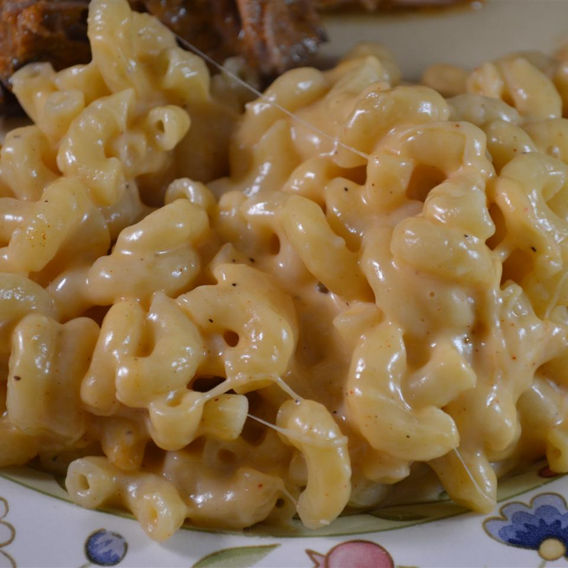

Recipe for MACNCHEESE

Description
I bought a rice cooker and wanted to use it for more than just rice.
I've made this mac 'n cheese several times and it always comes out delicious!
If you like your mac 'n cheese nice and crusty, leave the pot on warm for another
10 to 15 minutes after stirring the cheeses into the cooked macaroni.
Ingrediants
- 1 ½ cups elbow macaroni
- 1 ½ cups low-sodium chicken broth
- 1 cup unsweetened almond milk
- ¾ cup shredded Cheddar cheese
- ½ cup shredded mozzarella cheese
- ¼ cup grated Parmesan cheese
- ¼ teaspoon paprika
- salt and ground black pepper to taste
Steps
- Mix macaroni, broth, and almond milk together in the rice cooker and cook
according to manufacturer's instructions until macaroni is tender yet firm
to the bite, 30 to 40 minutes.
- Stir Cheddar cheese, mozzarella cheese, Parmesan cheese, paprika, salt, and
pepper into macaroni mixture until cheeses are melted.
Home